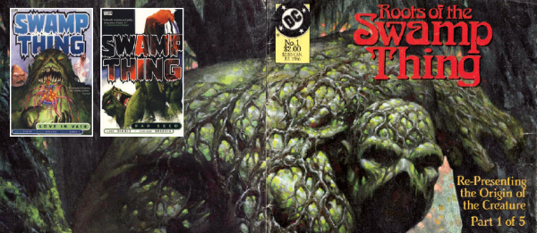

A themed article series discussing significant comics of the past.
| Article Title | Parts | Pages | w indicates a wraparound coverCovers | Year(s) | Issues | Writer | Artist | Colourist | Letterer |
|---|---|---|---|---|---|---|---|---|---|
| A History of Horror Comics | 2 | 14 | 0 | 2007 | M259-260 | Edward Berridge | reprints | <-- | n/a |
| Revenge of the 1970s | 1 | 2 | 0 | 2007 | M261 | Edward Berridge | reprints | <-- | n/a |
| Panzer Attack | 1 | 2 | 0 | 2007 | M262 | Edward Berridge | reprints | <-- | n/a |
| Warhammer Monthly: Someone Else's Toys | 1 | 3 | 0 | 2008 | M270 | Matthew Badham | reprints | <-- | n/a |
| Starblazer: Your Galaxy Needs You | 1 | 2 | 0 | 2008 | M272 | Matthew Badham | reprints | <-- | n/a |
| Batman: Prints of Darkness | 1 | 3 | 0 | 2008 | M274 | Alec Worley | reprints | <-- | n/a |
| The Story of British Adult Comics | 3 | 21 | 0 | 2008 | M275-277 | Edward Berridge | reprints | <-- | n/a |
| The Punisher: Fighting the Bad Fight | 1 | 3 | 0 | 2008 | M277 | Alec Worley | reprints | <-- | n/a |
| The Spirit: Who is the Spirit? | 1 | 3 | 0 | 2008 | M279 | Alec Worley | reprints | <-- | n/a |
| Watchmen: Who Watches the World? | 1 | 3 | 0 | 2009 | M280 | Alec Worley | reprints | <-- | n/a |
| Marshal Law: Fear & Loathing in San Futuro | 1 | 4 | 0 | 2009 | M282 | Danny Graydon | reprints | <-- | n/a |
| Hellboy: Hell to Pay | 1 | 4 | 0 | 2009 | M283 | Joel Meadows | reprints | <-- | n/a |
| Fantasy Comics: Immigrant Songs | 1 | 3 | 0 | 2009 | M284 | Alec Worley | reprints | <-- | n/a |
| Captain Britain: Pride of Britain | 1 | 3 | 0 | 2009 | M286 | Matthew Badham | reprints | <-- | n/a |
| Bear Alley Books: The Bear Essentials | 1 | 3 | 0 | 2009 | M288 | Matthew Badham | reprints | <-- | n/a |
| Licensed Comics: Licensed to Thrill | 1 | 7 | 0 | 2009 | M291 | Sean Egan | reprints | <-- | n/a |
| Werewolf Comics: Carnivorous Lunar Actiivities | 1 | 4 | 0 | 2010 | M294 | Alec Worley | reprints | <-- | n/a |
| Hellblazer: Blazing a Trail | 1 | 3 | 0 | 2010 | M294 | Joel Meadows | reprints | <-- | n/a |
Subtitled: "Where There's Mulch There's Brass".Forty Years of Swamp Thing | 1 | 4 | 0 | 2011 | M310 | Joel Meadows | reprints | <-- | n/a |
| Dan Dare: Comic Strip of the Future | 1 | 7 | 0 | 2011 | M314 | Matthew Badham | reprints | <-- | n/a |
| Scream!: Not for the Nervous | 1 | 2 | 0 | 2011 | M316 | Matthew Badham | reprints | <-- | n/a |
| Warrior: Way of the Warrior | 1 | 2 | 0 | 2012 | M320 | Matthew Badham | reprints | <-- | n/a |
| Misty: A Mist Opportunity? | 1 | 7 | 0 | 2016 | 2011 | Stephen Jewell | reprints | <-- | n/a |
| Action: The Sevenpenny Nightmare | 1 | 6 | 0 | 2016 | M379 | Stephen Jewell | reprints | <-- | n/a |
| Roy of the Rovers: It's All Kicking off… | 1 | 4 | 0 | 2018 | M403 | Karl Stock | reprints | <-- | n/a |
| Wildcat: Cat O'Four Tails | 1 | 4 | 0 | 2018 | M403 | Stephen Jewell | reprints | <-- | n/a |
| Speed: Fast Action | 1 | 4 | 0 | 2019 | M410 | Stephen Jewell | reprints | <-- | n/a |
| Starblazer: The Stars My Destination | 1 | 5 | 0 | 2019 | M415 | Stephen Jewell | reprints | <-- | n/a |
| Lion: The Comic That Roared | 1 | 5 | 0 | 2020 | M421 | Stephen Jewell | reprints | <-- | n/a |
| Smash!: Smash! N' Grab | 1 | 5 | 0 | 2020 | M422 | Stephen Jewell | reprints | <-- | n/a |
| Valiant: Adventure Time | 1 | 4 | 0 | 2021 | M432 | Stephen Jewell | reprints | <-- | n/a |
| The Fleetway Files: Cosmic Cuts | 1 | 4 | 0 | 2021 | M437 | Stephen Jewell | reprints | <-- | n/a |
| year | episodes | pages |
| 2001 | 0 | 0 |
| 2002 | 0 | 0 |
| 2003 | 0 | 0 |
| 2004 | 0 | 0 |
| 2005 | 0 | 0 |
| 2006 | 0 | 0 |
| 2007 | 4 | 18 |
| 2008 | 8 | 35 |
| 2009 | 7 | 27 |
| 2010 | 2 | 7 |
| 2011 | 3 | 13 |
| 2012 | 1 | 2 |
| 2013 | 0 | 0 |
| 2014 | 0 | 0 |
| 2015 | 0 | 0 |
| 2016 | 2 | 13 |
| 2017 | 0 | 0 |
| 2018 | 2 | 8 |
| 2019 | 2 | 9 |
| 2020 | 2 | 10 |
| 2021 | 2 | 8 |